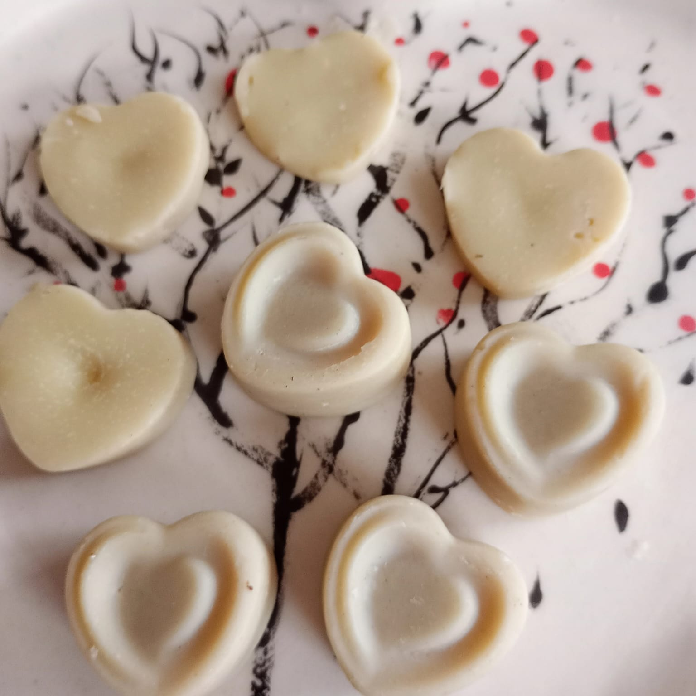
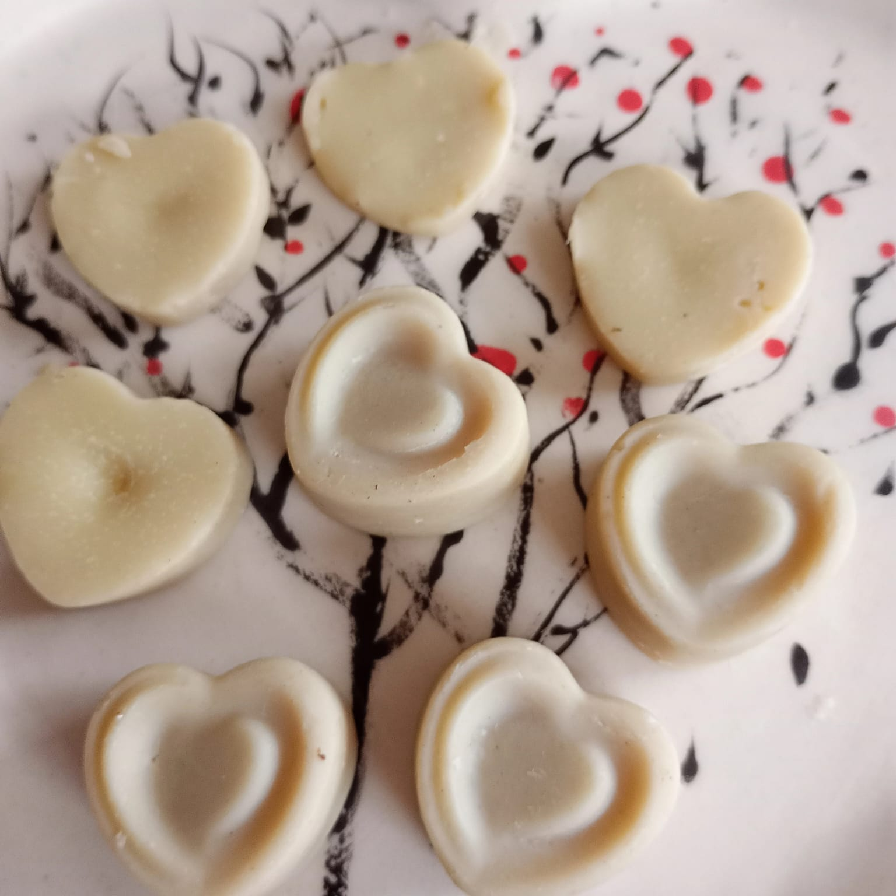

Sabiduría Ancestral
Inicia la fase reflexiva.
Mi nombre es Flavia Esther Saravia Sánchez.
Soy Técnica Química y Odontóloga, con formación en Aromaterapia y Cosmética Natural.
Me apasiona crear perfumes, desarrollando aromas desde una conexión profunda y un sentir consciente, donde cada esencia se transforma en una experiencia sensorial y energética.
A lo largo de mi camino profesional me especialicé en Terapias Energéticas, Terapias de Sonido y Canto Medicina, integrando ciencia, salud y conciencia.
Como compositora y artista musical, desarrollo mi proyecto creativo bajo el nombre de Esencia Cuántica, donde el arte y la vibración se convierten en herramientas de transformación y bienestar.
Soy la mujer que escucha a las flores y traduce el silencio en canciones. La alquimista que guarda el rocío para que recuerdes tu propia luz.
Soy creadora de perfumería biodinámica de autor, nacida del pulso vivo de la Tierra. Creo perfumes artesanales, terapéuticos y vibracionales, donde la ciencia se vuelve canto y el alma escucha. Cada aroma despierta de una conexión profunda, de un sentir sutil e invisible. No hablo de principios activos: revelo el espíritu secreto de cada esencia. En mi alquimia preparo hidrolatos, tinturas, oleatos y extractos a partir de mis propias plantas —rosas, lavandas, jazmines, melisas y otras guardianas verdes— cultivadas con amor y tiempo. Todo es creado sin tóxicos, en Villa Elvira, provincia de Buenos Aires, Argentina, bajo el ritmo de la naturaleza. Cada perfume es un pequeño hechizo. Está impregnado de frecuencias vibracionales, geometría sagrada y música medicina. Y cada uno guarda su canción: un soundtrack que acompaña el anclaje emocional del aroma, accesible a través de un código QR hacia mi música en Spotify o mediante melodías inéditas que solo viajan a través de la esencia.
El perfume como soundtrack vibracional: fórmulas ligadas a mi música. El sentir de la esencia evoca y ancla la emoción a la canción, despertando frecuencias de calma y conexión a través del sencillo musical.
El ciclo de la transmutación - Kit terapéutico. Medicina vibracional para equilibrar tu ritmo femenino. Eres todas las lunas. Este kit es una brújula sutil para navegar tus estaciones internas. Los cuatro perfumes actúan como espejos del alma: cada elixir es una llave que abre la puerta a tu fase actual, alineando útero, corazón y mente con la luz de la Luna.
Inicia la fase reflexiva.
Fuerza, acción y proyección.
Fase de crecimiento y abundancia.
Fase de culminación y reconexión.
Cada perfume es un puente entre mi jardín y tu corazón. La certeza de que eres parte de la naturaleza. En estos frascos, el sol, la tierra y mi canto se unen para recordarte quién eres.
Dulzura cautivante.
Torbellino de sensaciones silvestres, marinas y terrosas. Da paso a la templanza y la calma.
Dulce, suave y sutil.
Frescura que me eleva y despierta.
Uva dulce, vibrante y ácida.
Perfumes que reflejan la armonía entre lo infinito y lo íntimo. Así como el universo se refleja en cada átomo de nuestro cuerpo, estos aromas conectan el macrocosmo de la creación con el microcosmo de tu esencia individual. Una geometría sagrada en fragancia, donde el cielo y la tierra convergen en una sola vibración.
Majestuosa calma, cuasi transparente, finalmente talquesina y al principio imponente. Despierta la energía crística que anida en tu corazón.
Espíritu que me eleva a la conciencia superior, entrelazándome en el cosmos.
Energía chispeante que desciende del cielo, fresca, dulce y envolvente de cada amanecer. Enciende tu luz cada mañana.
Sutil y profundo, se percibe la calma, conecto con lo invisible y vuelvo a sentir quién soy. Somos energía manifestada en la tierra.
Perfumes elixir de lujo inspirados en arquetipos canalizados, creados con materia prima orgánica de cultivo propio y origen único. Cada esencia ancla en la piel una fuerza sutil a través del sentir intuitivo y la lectura akáshica. Una experiencia vibracional acompañada por melodías inéditas, frecuencias y geometrías sagradas.
Diosa del desierto. Resiliencia y sabiduría silenciosa. Ancla la fuerza interior del desierto: jovial, fresca y sensual. Con base de jazmín de casa.
Magia y transformación. Despierta el conocimiento ancestral y el poder del misterio. Cautivadora, sofisticada y atrapante.
Suave, dulce e inocente. Pureza y delicadeza fortificada.
Dulce y cálida. Conecta con la alegría, el cuento y la luz.
Protección y contención.
Fortaleza.
Claridad y acción.
Fragancias terapéuticas diseñadas para acompañar procesos emocionales y energéticos específicos, favoreciendo el equilibrio y el bienestar diario. Fórmulas funcionales elaboradas con aceites esenciales específicos, integradas con geometrías sagradas, flores vivas en su interior y una carga energética vibracional que potencia su acción armonizadora.
Despierta el optimismo y el entusiasmo; combate la tristeza.
Despierta la autoaceptación, la suficiencia, la gratitud y la alegría.
Evoca estados de absoluta quietud, anclando paz y calma en el presente.
Relaja el sistema nervioso central, disminuye la tensión, libera contracturas y reduce el cortisol.
Proporciona estabilidad y calma, sincronizando mente y emoción.
Alinea pensamientos con intuición, aportando conexión y sabiduría para decisiones certeras.
Evoca el juego, la luz y la sanación.
Sofisticado y sagrado, atemporal; ancla la mente en meditación y crea espacios profundos de introspección.
Fórmulas que marcan el origen de mi camino aromático, mis primeras composiciones de autor. Nacidas de la fusión entre ciencia, escucha consciente e intuición, cada esencia inaugura un diálogo sutil entre intención y resonancia.

Mi perfume personal. El más vendido. Sexy, dulce, pícaro, con brillo propio. Es una fórmula íntima. Contiene elixir de gemas, flores de Bach, con resonancia en mi signo zodiacal, acuario.
Suave talquecino.
Sensual, seducción, intrigante.
Pureza sutil.
Sofisticado, imponente.
Fórmula íntima en conexión profunda con la memoria y ancestros. Portal olfativo que ancla la sanación del duelo y mantiene viva la memoria de luz. Nació como encanto mágico, pero su maceración reveló una vibración única, el recuerdo puro de mi madre, Esther, la fuente de la vida. Representa el amor que trasciende el plano físico, ayuda a establecer conexión con seres queridos.
Sonido, Luz y Aroma en Resonancia
Integro el poder de la perfumería artesanal alquímica con la terapia de sonido, con instrumentos sagrados y el canto medicina. Canalizo frecuencias a través de la voz, la geometría sagrada, la luz, que ayudan a volver al equilibrio original. Canalizo la luz, sintonizo el alma y alquimizo la esencia.
Bajo el nombre de Esencia Cuántica, he dedicado mi trayectoria a explorar la intersección entre el sonido, la luz y la materia a través de los aromas. Mi camino comenzó canalizando frecuencias a través del canto y la música medicina; como pueden leer en la entrevista que me hicieron en Triangle Rouge. Hoy esa misma búsqueda me ha llevado a la perfumería artesanal Alquímica. Mi propósito sigue siendo el mismo, sintonizar tu ser con tu frecuencia más elevada.
Leer entrevista en Triangle Rouge →Canciones de autor. Mi faceta como cantautora, donde la palabra y la melodía se encuentran para habitar el sonido como un refugio de empoderamiento y luz.
Escuchar en Spotify →Cantos sagrados y medicina; Frecuencias de empoderamiento, piezas diseñadas para activar la fuerza interna utilizando armónicos canalizados y estructuras sonoras que resuenan con tu geometría y elevan tu vibración. Son piezas únicas que solo pueden conocerse a través de un contacto directo contigo, como en tus sesiones, tus perfumes o mediante un enlace privado.
Elaboro artesanalmente distintos preparados para acompañar tu práctica diaria. Cada creación está pensada para sostener estados de calma, energía, limpieza y conexión.

 

Agua de alto valor vibracional
Los hidrolatos se obtienen como subproducto de la destilación al vapor de distintas plantas medicinales y aromáticas. En nuestro caso, trabajamos con rosas, lavandas, melisa, jazmín, laurel, eucalipto, entre otras especies cuidadosamente seleccionadas.
Contienen micromoléculas de aceites esenciales en suspensión, lo que les confiere propiedades suaves, equilibrantes y profundamente sutiles. Su acción es delicada pero efectiva, respetando la energía natural de la planta.
Son de uso tópico y pueden aplicarse directamente sobre la piel como bruma, tónico o en rituales de bienestar y armonización energética.
Cosmético y energético
Tónico facial que equilibra el pH, limpia suavemente, humecta y aporta luminosidad a la piel. Calma rojeces, ideal para pieles sensibles.
Bruma áurica para la limpieza y armonización del aura y de los espacios. Aporta calma, suavidad y energía amorosa.
Para bienestar emocional y energético
Brumas formuladas para acompañar el bienestar emocional y energético.
Bruma Relajante: Induce a la calma y al descanso consciente.
Bruma de Almohada: Favorece la relajación profunda e induce al sueño.
Elaboradas a base de hidrolatos y aceites esenciales.
Agua de toilette delicada y aromática
Agua de toilette de composición delicada, aromática y refrescante.
Perfuma suavemente la piel y el campo áurico, aportando frescura, armonía y bienestar.
Una experiencia sensorial que equilibra cuerpo, mente y espíritu.
Reutilizables y artesanales
Discos de algodón reutilizables, tejidos a mano de forma artesanal.
Diseñados para acompañar tu rutina de cuidado consciente y sustentable.
Suaves con la piel, respetuosos con el medio ambiente.
Artesanía en su máxima expresión
Jabones: Preparados naturales con bases vegetales.
Bálsamos Labiales: Cuidado delicado y nutritivo.
Enjuague Bucal: Salud oral armónica.
Pasta Dental: Limpieza consciente.
Kits Temáticos: Amor Propio, Diosa Eres Tú y Limpieza Energética.
El sonido, al igual que el aroma, aporta información. Por eso, estas experiencias dialogan con la alquimia aromática y vibracional de esencia cuántica, creando un espacio de reconexión, presencia y equilibrio interior.
Perfume personalizado como remedio vibracional y molecular, resultado de una fórmula y frecuencia única, diagnosticado a través de la Medicina Ayurveda y Medicina Tradicional China. Lleva una carga cuántica vibracional y sonora, con melodías únicas y exclusivas de tu nombre, que resuenan con tu alma, anclando la intención en el perfume.
A través del canto terapéutico, el sound healing, la presencia consciente de la voz, los aromas y las frecuencias de luz; se crea un espacio sonoro que acompaña procesos de regulación emocional, equilibrio energético, y reconexión interior. Cada experiencia sonora es única, creada en el momento, en resonancia con la energía de quien recibe.